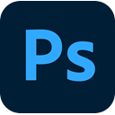
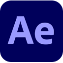
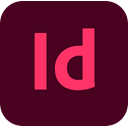
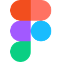

I'm a Graphic and Web Designer with an academic background in Graphic Design & Multimedia
and an audiovisual foundation.
I specialize in visual identity design, responsive website design and development, and the creation of
digital content for web and social media. Video editing and storyboarding complete the way I work:
every project starts from an approach that integrates creativity and strategy, to shape images that are
not just beautiful, but clear and effective. I also bring AI tools such as Claude into my workflow, to
speed up research, copywriting and prototyping, while the design choices remain my own.
Background
From film directing to web design: a journey that starts from the moving image and leads to digital design.
Education
LABA2019 – 2023Florence
Graphic Design & Multimedia
Bachelor's degree programme at the Libera Accademia di Belle Arti, focused on graphic design, web design, UX/UI, digital video, 3D animation and multimedia technologies for the creation of integrated visual projects across different media.
SNCI2018 – 2019Florence
National School of Independent Cinema
Training focused on editing fundamentals, film grammar and directing, combined with studio shooting techniques.
P. Petrocchi Art High School2013 – 2018Pistoia
Art High School
Audiovisual and Multimedia specialization.
Work experience
Weopera2024 – presentBuggiano
Graphic Design · Web Design
Design and development of responsive websites, creation of graphic content and social media video editing, managing brand identity and digital communication.
NewtonTrusthMay – June 2026Remote
Graphic Design · UX/UI
Remote role focused on developing the visual identity, digital content and marketing materials for a premium luxury automotive platform.
Freelance2023 – 2024
Graphic Design · Illustration
Logo design and illustrated brand identities for events, festivals and private clients.
Diaframma SrlJune – August 2019Prato
Grip
Production company specialized in toy commercials: managed camera supports, rigging and on-set equipment for camera and lighting.
Other experience
TalentformMay – July 2023Online
Storyboard course
Training aimed at pre-visualizing, through drawing, the sequence of shots for commercials, music videos and short films.
LURTJuly 2022Sicily
Documentary laboratory
Laboratory focused on territorial regeneration, developing real-life filming techniques.
Tools
Illustrator

Photoshop

After Effects

InDesign
Premiere Pro
Adobe XD

Figma
WordPress
Blender
ProjectsUX/UI & Web Design
4 projects
Websites, landing pages and digital identities designed around the people who will use them: clear hierarchies, readable content and a visual language consistent with the brand.
Demo IT
Website redesign · Logo
For Demo IT SRL, I redesigned the company website to create a more intuitive, clear and brand-aligned user experience. A heuristic analysis identified opportunities to improve usability, visual hierarchy and content communication, with particular attention to mobile responsiveness, readability and effective calls to action.
In parallel, I developed a modern logo built on fluid geometric shapes that convey connection, innovation and reliability. The result is a minimalist, professional and high-tech design that enhances functionality, visual appeal and user engagement while supporting the company's communication and conversion goals.
Naive Shore is a comprehensive branding and UX/UI design project for a handcrafted surfboard brand. The work includes a cohesive visual identity — a custom logo, bespoke board graphics and a colour palette — aligned with the brand's core values: craftsmanship, authenticity and a relaxed lifestyle.
The website and social media presence were designed to showcase the community, highlight visual content and provide a simple yet immersive digital experience, where aesthetics, storytelling and functionality work together.
The website was designed as a one-page experience, simplifying navigation and guiding users through a clear, continuous journey that conveys the firm's identity and services at a glance.
Marble is the primary visual element: it evokes structural solidity and conveys stability and reliability, while its refined texture introduces an elegant, institutional aesthetic that reflects the authority of the profession. The design balances clarity and visual sophistication, creating a trustworthy digital presence aligned with the values of a tax advisory firm.
I designed the landing page for Weopera, an agency specializing in web development, e-commerce and SEO strategies, with the goal of improving user conversion and clearly communicating the value of its services.
The creative concept revolves around the theme of space, used as a metaphor for the digital growth journey: clients begin in a state of uncertainty and are guided toward measurable results through the agency's expertise. The page is built as a progressive narrative funnel, leading users from initial curiosity to requesting a consultation.
Digital and vector illustration, publishing and visual storytelling: projects in which graphic synthesis becomes narrative.
Six Memos for the Next Millennium Lezioni americane
Illustrated book · Artistic research
Inspired by Italo Calvino's essay, the project is an experimental artistic research exploring the visual translation of lightness, speed, exactness, visibility and multiplicity through illustration. The visuals are synthetic and atmospheric, built on geometric forms and essential compositions; the same geometric language defines the editorial layout, creating a coherent visual system.
Grain, like a dust of particles, makes shapes, bodies and atmospheres vibrate and gives the images substance. The editorial concept includes one volume per memo, recognisable by the number on the cover: a dialogue between literature and image that turns abstract concepts into contemporary visual narratives.
Goals
01Visually translating the concepts of the essay
02Developing evocative digital illustrations
03Maintaining a coherent graphic and editorial style
Created for a design contest, the illustration uses a modern vector language to celebrate office work, elevating everyday desk routines through an ironic transformation: an ordinary red stapler becomes a symbol of speed, innovation and design excellence.
In the foreground, a designer sketches the motorcycle's technical details on a drawing board while, above him, the idea takes shape. Sharp geometric lines, bold diagonal cuts and clean colour fields give life to a futuristic motorcycle, where the contrast between metallic greys and vivid red emphasizes its sleek, aerodynamic volumes.
The three covers designed for Silvano Ferretti celebrate excellence in construction through a minimalist, material-driven visual language. Grainy gradients and textured surfaces evoke concrete, stone and other building materials, creating an almost tactile experience.
Each cover focuses on a distinct area — interiors, exteriors and swimming pools — using geometric forms and refined, desaturated palettes. The contrast between the bold, structured logo and the tagline “dreams are handmade” expresses the balance between technical expertise, structural solidity and meticulous craftsmanship.
Goals
01Communicate materiality through visual design
02Evoke tactile sensations through grainy textures
03Highlight products through tactile and visual perception
Ghibellino 38 · Basketball Tournament · Space Soda
In “Ghibellino 38” I reinterpret the landscape for a running event: the runner and the hilly road generate dynamic perspective force lines for T-shirts and postcards, using a high-contrast pop colour triad.
The sense of movement continues in “Basketball Tournament”, where a powerful low-angle perspective monumentalizes the athlete and the intensity of the game. Finally, “Space Soda” offers a pop-cosmic vision: an effervescent bottle rising toward a starry sky. Three projects, one narrative system made of motion, symbolism and visual impact.
In addition to illustration projects, I developed storyboards for animation, advertising and illustrated publishing, constructing visual sequences that define narrative rhythm, framing, character movement and scene atmosphere.
Sketches and project boards support the creative and production phases, making it possible to visualize ideas before final execution. This work deepened my understanding of cinematic language and visual synthesis, combining drawing with attention to storytelling, continuity and the clarity of the visual narrative.